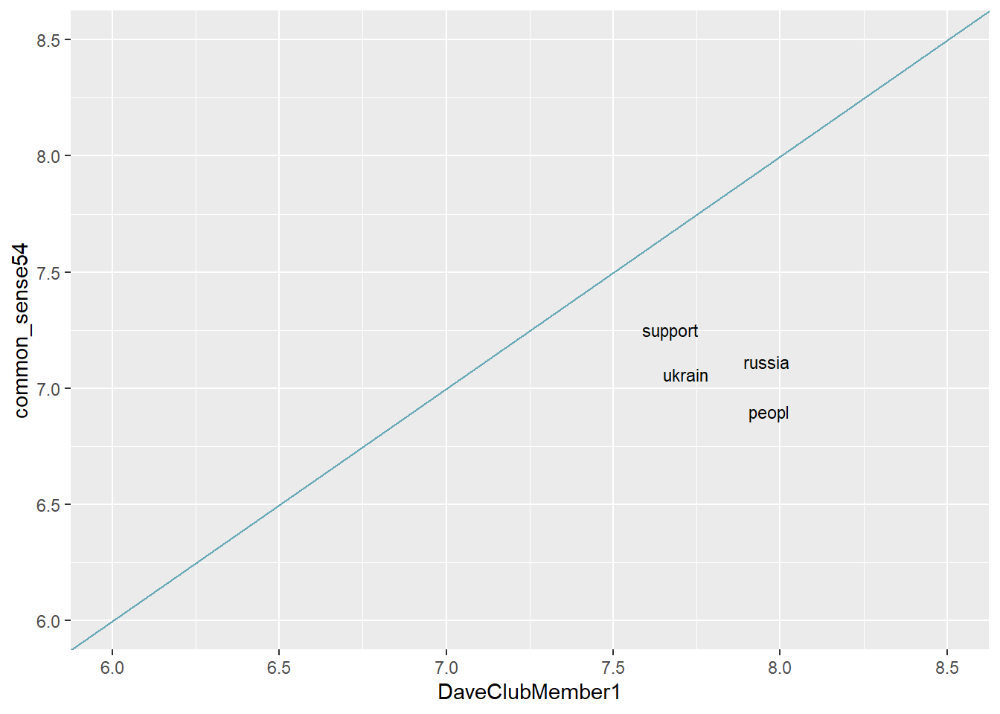
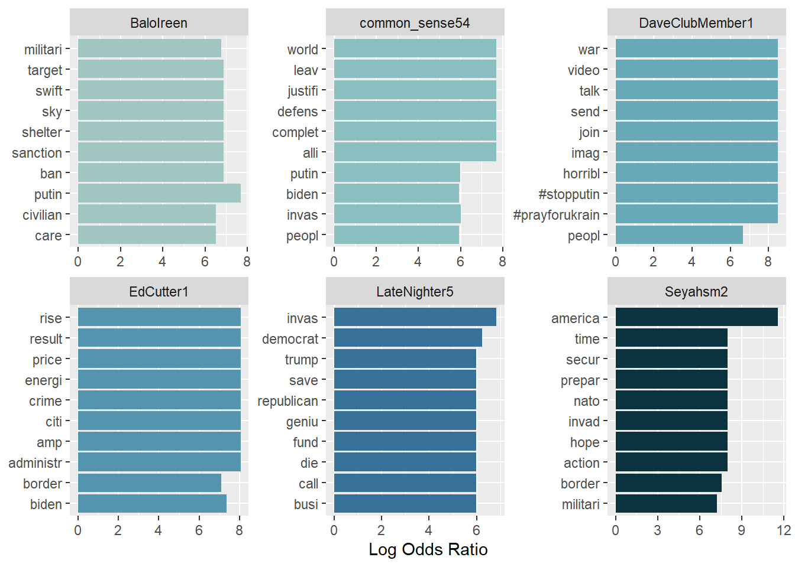
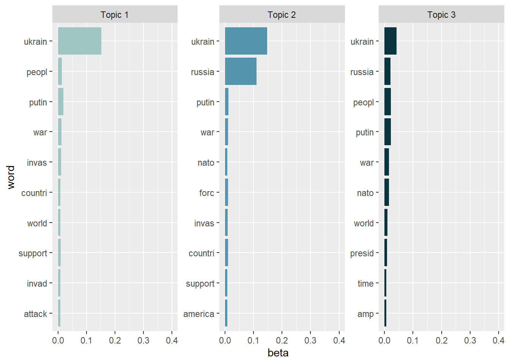
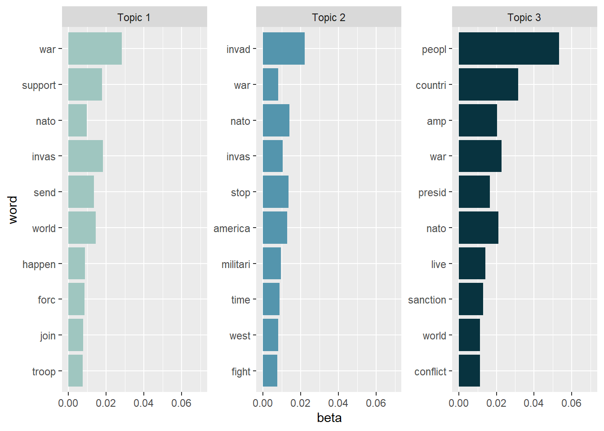
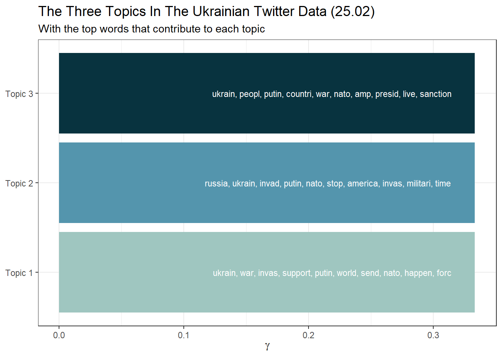

7 Tidy text analysis
After working through Tutorial 7, you’ll…
- understand the concept of tidy text
- know how to combine tidy text management approaches with regular expressions
- be able to produce first analyses, e.g., word frequencies
7.1 What is tidy text?
Since you’ve already learnt what tidy data is (see Tidy data), you can make an educated guess about the meaning of “tidy text”! In contrast to the ways text is commonly stored in existing text analysis approaches (e.g., as strings or document-term matrices), the tidy text format is a table with one single token per row (token = the unit of analysis). A token is a meaningful unit of text, i.e., a word, a sentence, or a paragraph that we are interested in using for further analysis. Splitting text into tokens is what we call the process of tokenization.
Julia Silge and David Robinson’s tidytext package makes tokenizing into the tidy text format simple! Moreover, the tidytext package builds upon tidyverse and ggplot2, which makes it easy to use for you, since you already know these packages (see Tutorial: Data management with tidyverse and Tutorial: Data visualization with ggplot for a recap). That’s why we’ll focus on the tidytext in this breakout session.
This tutorial is based on Julia Silge and David Robinson’s open-access book “Text Mining in R. A Tidy Approach” and a lot of the following code was actually written by Julia Silge. If you want to dig deeper into tidy text analysis, you should check the book out. Both authors have also created an informative flowchart of the tidy text analysis workflow:
| Image: Tidy Text Analysis Workflow |
 |
7.2 Example
7.2.1 First steps
To give you an example of what the tidytext package is capable of, let’s create some toy data first. Look at this tweet about the Russian aggression against Ukraine and the Eurovision Song Contest:
| Image: Tweet about the Russian Aggression Against Ukraine and the Eurovision Song Contest |
 |
Let’s save the text of this tweet into a variable called tweet, which will consist of 8 separate strings for each individual clause of the tweet.
tweet <- c("To the ppl not getting it ",
"it's about showing solidarity.",
"That's why the majority voted for Ukraine.",
"It's not going to stop the war ",
"but it's another gesture to show Europe stands with them.",
"Some of these men might not be here next year.",
"#Eurovision",
"#esc2022")
tweet## [1] "To the ppl not getting it " "it's about showing solidarity." "That's why the majority voted for Ukraine."
## [4] "It's not going to stop the war " "but it's another gesture to show Europe stands with them." "Some of these men might not be here next year."
## [7] "#Eurovision" "#esc2022"Next, install and load the tidytext package, the tidyverse package & the lubridate package. lubridate will convert dates to a standard format, making it easier to create graphs using time data.
# installing/loading the package:
if(!require(tidytext)) {
install.packages("tidytext");
require(tidytext)
} #load / install+load tidytext
# installing/loading lubridate:
if(!require(lubridate)) {
install.packages("lubridate");
require(lubridate)
} #load / install+load lubridate
library(lubridate)
library(tidytext)
library(tidyverse)Now, we need to turn our tweet variable into a table using the tibble() function, which is part of the tibble package that comes pre-installed with tidyverse.
tweet_df <-
tibble(line = 1:length(tweet), # this line creates a column called 'line' that contains the row number, starting with 1 and ending with the last row
text = tweet) # this line will create a column called 'text' that contains all text information from our tweet variable
tweet_df## # A tibble: 8 x 2
## line text
## <int> <chr>
## 1 1 "To the ppl not getting it "
## 2 2 "it's about showing solidarity."
## 3 3 "That's why the majority voted for Ukraine."
## 4 4 "It's not going to stop the war "
## 5 5 "but it's another gesture to show Europe stands with them."
## 6 6 "Some of these men might not be here next year."
## 7 7 "#Eurovision"
## 8 8 "#esc2022"Our tweet is now displayed as a table with 8 rows and one variable that contains the actual text information. If our unit of analysis, i.e. token, is a single word, then this data frame cannot be considered “tidy” because it does not follow the one-token-per-row logic. Breaking the text into separate tokens (tokenization) and transforming it into a clean data structure is required. We are in luck: The tidytext package provides the unnest tokens() function to do just that.
tweet_df_tknzd <- tweet_df %>%
unnest_tokens(word, text) # this line takes the column called 'text' from the tweet_df and tokenizes (unit of analysis: word) its content into a new column called 'word'
tweet_df_tknzd## # A tibble: 46 x 2
## line word
## <int> <chr>
## 1 1 to
## 2 1 the
## 3 1 ppl
## 4 1 not
## 5 1 getting
## 6 1 it
## 7 2 it's
## 8 2 about
## 9 2 showing
## 10 2 solidarity
## # ... with 36 more rowsNote: unnest tokens() comes with a few handy preprocessing features, i.e., it already turns the text into a standardized format for further analysis:
1. Line numbers from which each word originated are kept in the data frame (column: line).
2. All punctuation has already been taken care of, i.e., dots, questions marks, etc. have been removed.
3. All uppercase letters have been taken care of, i.e., words have been transformed to lowercase.4
7.2.2 Preprocessing real-world data
Now that you have seen what the tidytext package is capable of, let’s try it on some real-world data. I’ve provided you with a data file that contains data collected with the Twitter API about the Russian aggression against Ukraine. You can download this file on my Github page: Download here.
Let’s import the data into RStudio and inspect it using the View() function.
data <- read.csv("ukraine_tweets2.csv", encoding = "UTF-8") # Use UTF-8 encoding to keep the smilies
Sys.setenv(TZ="UTC") # Twitter gives a UTC timestamp, so we'll need to set our own environment to UTC, too
data %>%
mutate(time = lubridate::ymd_hms(time)) %>% # turn the data column into a proper format with the lubridate package (this helps to create time series graphs!)
tibble()## # A tibble: 53,097 x 18
## time user user.id user.location user.description user.followers_~ hashtag0 hastag1 mention0.at_name mention0.screen~ mention0.id reply_to reply_to_id full_text id_str
## <dttm> <chr> <dbl> <chr> <chr> <int> <chr> <chr> <chr> <chr> <dbl> <chr> <dbl> <chr> <dbl>
## 1 2022-02-25 18:10:59 peek~ 6.34e 7 "" "" 30 <NA> <NA> vonderleyen "Ursula von der~ 1.15e18 vonderl~ 1.15e18 "@vonder~ 1.50e18
## 2 2022-02-25 18:10:59 Soci~ 2.34e 8 "Britain" "Twitter accoun~ 17583 <NA> <NA> Luca_Bo_ "Luca_Bo" 1.14e 9 <NA> NA "RT @Luc~ 1.50e18
## 3 2022-02-25 18:10:59 Terr~ 1.07e18 "" "" 6 <NA> <NA> Tom_Fowdy "Tom Fowdy" 9.58e17 <NA> NA "RT @Tom~ 1.50e18
## 4 2022-02-25 18:10:59 sodr~ 1.19e 8 "Bergen, Nor~ "science-policy~ 727 war Ukraine KurakinEgor "Georgy Kurakin" 2.33e 9 <NA> NA "RT @Kur~ 1.50e18
## 5 2022-02-25 18:10:59 jab6~ 1.95e 9 "" "" 10 <NA> <NA> DiamondandSilk "Diamond and Si~ 2.91e 9 <NA> NA "RT @Dia~ 1.50e18
## 6 2022-02-25 18:10:59 Phil~ 5.42e 7 "St Albans o~ "Dad x2, husban~ 629 <NA> <NA> andersostlund "Anders Östlund" 2.16e 7 <NA> NA "RT @and~ 1.50e18
## 7 2022-02-25 18:10:59 JAMB~ 1.04e18 "Wolverhampt~ "\U0001f3f4\U00~ 791 <NA> <NA> Krupa "Daniel \U0001f~ 2.07e 7 <NA> NA "RT @Kru~ 1.50e18
## 8 2022-02-25 18:10:59 Sara~ 7.50e17 "SoCal " "| Mom | Wife |~ 39808 <NA> <NA> NotHoodlum "Hoodlum \U0001~ 1.11e18 <NA> NA "RT @Not~ 1.50e18
## 9 2022-02-25 18:10:59 halo~ 1.28e18 "" "Hope 2022 is o~ 4 peace Ukraine thichnhathanh "Thich Nhat Han~ 1.76e 7 <NA> NA "RT @thi~ 1.50e18
## 10 2022-02-25 18:10:59 zabi~ 1.16e 8 "Lahore, Pak~ "Digital Journa~ 101 <NA> <NA> Non_graata "SocialPariah" 8.48e 7 <NA> NA "RT @Non~ 1.50e18
## # ... with 53,087 more rows, and 3 more variables: is_quote_status <lgl>, favorite_count <int>, retweet_count <int>View(data)This data set contains a lot of information! We get to know who wrote the tweet (user and the unique user.id) and where this person lives (user.location). But most importantly, we can find the text of the tweet in the column full_text.
First of all, let’s reduce some of these columns that we don’t need for our text analysis.
data_short <- data %>%
select(time, user, full_text) # keeps time, user, and full_text
View(data_short)Now, to get an overview, let’s create a visualization of the user’s who posted at least 18 tweets.
data_short %>%
group_by(user) %>%
summarize(n = n()) %>%
filter(n > 18) %>%
ggplot(aes(x = user, y = n)) +
stat_summary(geom = "bar") +
theme_bw() +
theme(axis.text.x = element_text(angle = 90, vjust = 0.00, hjust = 0.00)) +
labs(title = "Users who posted the most tweets about the Russian\naggression against Ukraine",
x = "User name", y = "Number of Tweets")
Now that we have had our overview, we will start with a process called text normalization. Text normalization is the endeavor to minimize the variability of a text by bringing it closer to a specified “standard” by reducing the quantity of divergent data that the computer has to deal with. Therefore, text normalization boots efficiency. Some techniques of text normalization will be covered in the next few section, for example, tokenization, stop word removal, and stemming/lemmatization.
7.2.2.1 Tokenization
I think we are ready to tokenize the data with the unnest tokens() function. Tokenization is the process of breaking text into words (and punctuation marks). Since scientists are almost never interested in the punctuation marks and will delete them from the data set later anyway, unnest tokens() comes with the nice bonus of deleting the punctuation marks directly, leaving only words as tokens.
We will use the highly specialized token = "tweets" option of the tidytext package (by Mullen 2016), which preserves hashtags and mentions of users with the @ sign from the direct punctuation removal process performed by unnest tokens().
Another common practice is to remove all tokens that contain numbers. Depending on the research question, it can also be helpful to remove URLs. For illustrative purposes, we will do both. But keep in mind that removing all URLs will take the option from you to compare what accounts have shared certain URLs more frequently than others.
remove_reg <- "&|<|>" # & = & in HTML, < = < in HTML, > = > in HTML
data_tknzd <- data_short %>%
mutate(tweet = row_number()) %>%
filter(!str_detect(full_text, "^RT")) %>% # removes all retweets, i.e., tweets that are not unique but a reposts
mutate(text = str_remove_all(full_text, remove_reg)) %>% # remove special HTML characters (&, <, >)
unnest_tokens(word, full_text, token = "tweets") %>% # using `to_lower = TRUE` with `token = 'tweets'` can break URLs, so be sure that you don't need them
filter(!str_detect(word, "^[:digit:]+$")) %>% # remove all words that are numbers, e.g. "2020"
filter(!str_detect(word, "^http")) # remove all words that are a URL, e.g., (https://evoldyn.gitlab.io/evomics-2018/ref-sheets/R_strings.pdf)
head(data_tknzd)## time user tweet
## 1 2022-02-25 18:10:59 peekay14 1
## 2 2022-02-25 18:10:59 peekay14 1
## 3 2022-02-25 18:10:59 peekay14 1
## 4 2022-02-25 18:10:59 peekay14 1
## 5 2022-02-25 18:10:59 peekay14 1
## 6 2022-02-25 18:10:59 peekay14 1
## text
## 1 @vonderleyen @EU_Commission rubbish! Your words and those of your fellow EU politicians are baseless and useless to the people of Ukraine! Do something to help them, more severe sanctions against Russia or send in troops, but stop talking and do something, innocent people are being attacked in Europe!!
## 2 @vonderleyen @EU_Commission rubbish! Your words and those of your fellow EU politicians are baseless and useless to the people of Ukraine! Do something to help them, more severe sanctions against Russia or send in troops, but stop talking and do something, innocent people are being attacked in Europe!!
## 3 @vonderleyen @EU_Commission rubbish! Your words and those of your fellow EU politicians are baseless and useless to the people of Ukraine! Do something to help them, more severe sanctions against Russia or send in troops, but stop talking and do something, innocent people are being attacked in Europe!!
## 4 @vonderleyen @EU_Commission rubbish! Your words and those of your fellow EU politicians are baseless and useless to the people of Ukraine! Do something to help them, more severe sanctions against Russia or send in troops, but stop talking and do something, innocent people are being attacked in Europe!!
## 5 @vonderleyen @EU_Commission rubbish! Your words and those of your fellow EU politicians are baseless and useless to the people of Ukraine! Do something to help them, more severe sanctions against Russia or send in troops, but stop talking and do something, innocent people are being attacked in Europe!!
## 6 @vonderleyen @EU_Commission rubbish! Your words and those of your fellow EU politicians are baseless and useless to the people of Ukraine! Do something to help them, more severe sanctions against Russia or send in troops, but stop talking and do something, innocent people are being attacked in Europe!!
## word
## 1 @vonderleyen
## 2 @eucommission
## 3 rubbish
## 4 your
## 5 words
## 6 andAs you can see, unnest tokens() in combination with the token = "tweets" option has kept all mentions as tokens. Add %>% filter(!str_detect(word, "^@")) at the end of the above presented code if you want to remove these, too.
Now, let’s check the total number of unique words in our tweet data:
paste("We are investigating ", dim(data_tknzd)[1], " non-unique features / words and ", length(unique(data_tknzd$word)), " unique features / words.")## [1] "We are investigating 250371 non-unique features / words and 23614 unique features / words."7.2.2.2 Removing stop words
Next, we should get rid of stop words. Stop words are a group of words that are regularly used in a language. In English, stop words such as “the,” “is,” and “and” would qualify. Because stop words are so common, they don’t really tell us anything about the content of a tweet and what differentiates this tweet from other tweets. The tidytext package comes with a pre-installed stop word data set. Let’s save that data set to a source object called stop_word_data. This way, we can use it later.
stop_word_data <- tidytext::stop_words
head(stop_word_data, 20) # prints the first 20 stop words to the console## # A tibble: 20 x 2
## word lexicon
## <chr> <chr>
## 1 a SMART
## 2 a's SMART
## 3 able SMART
## 4 about SMART
## 5 above SMART
## 6 according SMART
## 7 accordingly SMART
## 8 across SMART
## 9 actually SMART
## 10 after SMART
## 11 afterwards SMART
## 12 again SMART
## 13 against SMART
## 14 ain't SMART
## 15 all SMART
## 16 allow SMART
## 17 allows SMART
## 18 almost SMART
## 19 alone SMART
## 20 along SMARTNow, let’s use these stop words to remove all tokens that are stop words from our tweet data.
data_tknzd <- data_tknzd %>%
filter(!word %in% stop_word_data$word) %>% # removes all of our tokens that are stop words
filter(!word %in% str_remove_all(stop_word_data$word, "'")) # first removes all ' from the stop words (e.g., ain't -> aint) and then removes all of our tokens that resemble these stop words without punctuation7.2.2.3 Lemmatizing & stemming
Minimizing words to their basic form (lemmatizing) or root (stemming) is a typical strategy of reducing the number of words in a text.
Stemming: A stem is the root form of a word without any suffixes. A stemming algorithm (= stemmer) removes the suffixes and returns the stem of the word. Example1: vengeance –> vengeanc, or, if you use a very aggressive stemmer, vengeance –> veng || Example2: legions –> legion, or, if you use a very aggressive stemmer, legions –> leg (this one is problematic!) || Example3: murdered –> murder
Lemmatization: A lemma is a lexicon headword or, i.e., the dictionary-matched basic form of a word (as opposed to a stem created by eliminating or changing suffixes). Because a lemmatizing algorithm (= lemmatizer) performs dictionary matching, lemmatization is more computationally demanding than stemming. vengeance –> vengeance || Example2: legions –> legion || Example3: murdered –> murdered (this one is problematic!)
Most of the time, stemmers will make a lot of mistakes (e.g., legions –> leg) and lemmatizers will make fewer mistakes. However, lemmatizers summarize fewer words (murdered –> murdered) and therefore reduce the word count less efficiently than stemmers. Which technique of text normalization is preferred is always determined by the research question and the available data.
For the ease of teaching, we will use stemming on our tweet data. However, you could also use lemmatization with the spacyr package.
We’ll use Porter’s (1980) stemming algorthm, which is the most extensively used stemmer for the English language. Porter made the stemmer open-source, and you may use it with R using the SnowballC package (Bouchet-Valat 2020).
# installing/loading SnowballC:
if(!require(SnowballC)) {
install.packages("SnowballC");
require(SnowballC)
} #load / install+load SnowballC
data_tknzd <- data_tknzd %>%
mutate(word = wordStem(word))
head(data_tknzd)## time user tweet
## 1 2022-02-25 18:10:59 peekay14 1
## 2 2022-02-25 18:10:59 peekay14 1
## 3 2022-02-25 18:10:59 peekay14 1
## 4 2022-02-25 18:10:59 peekay14 1
## 5 2022-02-25 18:10:59 peekay14 1
## 6 2022-02-25 18:10:59 peekay14 1
## text
## 1 @vonderleyen @EU_Commission rubbish! Your words and those of your fellow EU politicians are baseless and useless to the people of Ukraine! Do something to help them, more severe sanctions against Russia or send in troops, but stop talking and do something, innocent people are being attacked in Europe!!
## 2 @vonderleyen @EU_Commission rubbish! Your words and those of your fellow EU politicians are baseless and useless to the people of Ukraine! Do something to help them, more severe sanctions against Russia or send in troops, but stop talking and do something, innocent people are being attacked in Europe!!
## 3 @vonderleyen @EU_Commission rubbish! Your words and those of your fellow EU politicians are baseless and useless to the people of Ukraine! Do something to help them, more severe sanctions against Russia or send in troops, but stop talking and do something, innocent people are being attacked in Europe!!
## 4 @vonderleyen @EU_Commission rubbish! Your words and those of your fellow EU politicians are baseless and useless to the people of Ukraine! Do something to help them, more severe sanctions against Russia or send in troops, but stop talking and do something, innocent people are being attacked in Europe!!
## 5 @vonderleyen @EU_Commission rubbish! Your words and those of your fellow EU politicians are baseless and useless to the people of Ukraine! Do something to help them, more severe sanctions against Russia or send in troops, but stop talking and do something, innocent people are being attacked in Europe!!
## 6 @vonderleyen @EU_Commission rubbish! Your words and those of your fellow EU politicians are baseless and useless to the people of Ukraine! Do something to help them, more severe sanctions against Russia or send in troops, but stop talking and do something, innocent people are being attacked in Europe!!
## word
## 1 @vonderleyen
## 2 @eucommiss
## 3 rubbish
## 4 word
## 5 fellow
## 6 euLet’s check how many unique words we have in our tweet data after all of our preprocessing efforts:
paste("We are investigating ", dim(data_tknzd)[1], " non-unique features / words and ", length(unique(data_tknzd$word)), " unique features / words.")## [1] "We are investigating 120128 non-unique features / words and 18827 unique features / words."7.2.2.4 Removing very rare/frequent words
Finally, words that appear in practically every tweet or words that that appear only once or twice are not very helpful for investigating the “typical” word use of certain Twitter accounts. Since these words do not contribute to capturing similarities and differences in texts, it is a good idea to remove them. This process of relative pruning. You can achieve a very basic version of relative pruning with the tidytext package, i.e. you remove frequent words independent of how characteristic they are for certain tweets. Since this is a very basic approach, you can see the code here, but we will not use the results in the following sections:
data_tknzd_basic <- data_tknzd %>%
group_by(word) %>%
summarize(n = n()) %>%
mutate(freq = (n / sum(n))*100) %>%
filter(freq >= 0.0009) %>% # drop the super rare words, i.e. words that make up less than 0.0009% of all word occurrences
filter(freq <= 1.00) # drop the super frequent words, i.e. words that make up less than 1.000% of all word occurrencesInstead relative pruning can also be achieved with the quanteda package, allowing for advanced options (i.e., removing frequent words that occur in many tweets and are thus not very helpful for investigating the “typical” word use of certain Twitter accounts). We want to use these options in this tutorial. Unfortunately, you will not be able to understand the code yet, but you will after reading the entire Tutorial, especially after reading the section on Topic modeling. For example, after reading that section, you will know what a dfm is. For now, please install & load quanteda and just use this code without really understanding it:
# Install / load the quanteda package for topic modeling
if(!require(quanteda)) {
install.packages("quanteda");
require(quanteda)
} #load / install+load quanteda
# turn the tidy data frame into a document-feature matrix:
dfm <- data_tknzd %>%
select(tweet, text, word, user) %>%
count(tweet, word, sort = TRUE) %>%
cast_dfm(tweet, word, n)
# perform relative pruning:
dfm <- dfm_trim(dfm,
min_docfreq = 0.005, # remove all words that occur in less than 0.5% of all tweets
max_docfreq = 0.90, # remove all words that occur in more than 90% of all tweets
docfreq_type = "prop", # use probabilities
verbose = FALSE) # don't tell us what you have achieved with relative pruning
# turn the document-feature-matrix back into a tidy data frame:
data_tknzd2 <- tidy(dfm) %>%
rename(word = term) %>% # rename columns so that their names from data_tknzd and data_tknzd2 match
rename(tweet = document) %>%
select(-count) %>% # remove the count column
mutate(tweet = as.integer(tweet))
# delete the words that quanteda suggested from the original data_tknzd
data_tknzd <- right_join(data_tknzd, data_tknzd2, by = c("tweet","word")) %>% # keep only the shorter data set without frequent/rare words, but fill in all other columns like user and date
distinct(tweet,word, .keep_all= TRUE) # remove duplicate rows that have been created during the merging processFinally, now that we have removed very rare and very frequent words, let’s check the number of our unique words again:
paste("We are investigating ", dim(data_tknzd)[1], " non-unique features / words and ", length(unique(data_tknzd$word)), " unique features / words.")## [1] "We are investigating 55348 non-unique features / words and 346 unique features / words."Great, we have finished the text normalization process! I think we are ready to take a sneak peek at our most common words! What are the 10 most commonly used words in our tweet data? I’m excited!
data_tknzd %>%
count(word, sort = TRUE) %>%
slice_head(n=10)## word n
## 1 ukrain 7555
## 2 russia 2115
## 3 putin 1478
## 4 #ukrain 1364
## 5 russian 1241
## 6 peopl 1114
## 7 war 1092
## 8 nato 829
## 9 invas 692
## 10 countri 656Evaluation: Shortly after Russia’s invasion of Ukraine began, Twitter conversations centered on the countries Ukraine, Russia, Putin, the people, the war, NATO, and the invasion.
7.2.3 (Relative) word frequencies
What words are used by which Twitter accounts might reveal a lot about their agenda or thought processes. Words have power, especially in times of conflict. Words, for example, might help define who is seen as the attacker and who is seen as the defender. It matters whether I call something an “attack” or a “war”, since an aggression is a unilateral act of invasion, while a war is a reciprocal relationship that has two parties involved.
Therefore, we want to look at the absolute word frequencies of the 5 most active Twitter accounts in our data set. For this, we need to group our data by the most active Twitter accounts and count how many times each user used each term.
data_tknzd %>%
group_by(user) %>%
summarize(n = n()) %>%
arrange(desc(n)) %>%
filter(n > 102)## # A tibble: 6 x 2
## user n
## <chr> <int>
## 1 DaveClubMember1 390
## 2 common_sense54 367
## 3 EdCutter1 251
## 4 Seyahsm2 209
## 5 BaloIreen 154
## 6 LateNighter5 112Evaluation: The five most active Twitter accounts are DaveClubMember1, common_sense54, EdCutter1, Seyahsm2, and BaloIreen, LateNighter5.
frequency <- data_tknzd %>%
filter(user == "DaveClubMember1" | user == "common_sense54" | user == "EdCutter1" | user == "Seyahsm2" | user == "BaloIreen" | user == "LateNighter5") %>% # remove all users that are not the most prominent users
count(user, word, sort = TRUE) # sorts the word, i.e., the most common words are displayed first
frequency## user word n
## 1 DaveClubMember1 #prayforukrain 30
## 2 DaveClubMember1 #stopputin 30
## 3 DaveClubMember1 horribl 30
## 4 DaveClubMember1 imag 30
## 5 DaveClubMember1 join 30
## 6 DaveClubMember1 peopl 30
## 7 DaveClubMember1 russia 30
## 8 DaveClubMember1 send 30
## 9 DaveClubMember1 support 30
## 10 DaveClubMember1 talk 30
## 11 DaveClubMember1 ukrain 30
## 12 DaveClubMember1 video 30
## 13 DaveClubMember1 war 30
## 14 common_sense54 alli 26
## 15 common_sense54 biden 26
## 16 common_sense54 complet 26
## 17 common_sense54 defens 26
## 18 common_sense54 democrat 26
## 19 common_sense54 invas 26
## 20 common_sense54 justifi 26
## 21 common_sense54 leav 26
## 22 common_sense54 peopl 26
## 23 common_sense54 putin 26
## 24 common_sense54 russian 26
## 25 common_sense54 support 26
## 26 common_sense54 ukrain 26
## 27 common_sense54 world 26
## 28 EdCutter1 administr 19
## 29 EdCutter1 amp 19
## 30 EdCutter1 biden 19
## 31 EdCutter1 border 19
## 32 EdCutter1 citi 19
## 33 EdCutter1 crime 19
## 34 EdCutter1 democrat 19
## 35 EdCutter1 energi 19
## 36 EdCutter1 price 19
## 37 EdCutter1 result 19
## 38 EdCutter1 rise 19
## 39 EdCutter1 support 19
## 40 EdCutter1 ukrain 19
## 41 Seyahsm2 action 16
## 42 Seyahsm2 america 16
## 43 Seyahsm2 american 16
## 44 Seyahsm2 border 16
## 45 Seyahsm2 hope 16
## 46 Seyahsm2 invad 16
## 47 Seyahsm2 militari 16
## 48 Seyahsm2 nato 16
## 49 Seyahsm2 prepar 16
## 50 Seyahsm2 russia 16
## 51 Seyahsm2 secur 16
## 52 Seyahsm2 time 16
## 53 Seyahsm2 ukrain 16
## 54 BaloIreen ban 10
## 55 BaloIreen putin 10
## 56 BaloIreen russia 10
## 57 BaloIreen sanction 10
## 58 BaloIreen shelter 10
## 59 BaloIreen sky 10
## 60 BaloIreen swift 10
## 61 BaloIreen target 10
## 62 BaloIreen ukrain 10
## 63 BaloIreen ukrainian 10
## 64 BaloIreen care 9
## 65 BaloIreen civilian 9
## 66 BaloIreen militari 9
## 67 BaloIreen protect 9
## 68 BaloIreen russian 9
## 69 BaloIreen @potu 8
## 70 LateNighter5 busi 8
## 71 LateNighter5 call 8
## 72 LateNighter5 democrat 8
## 73 LateNighter5 die 8
## 74 LateNighter5 fund 8
## 75 LateNighter5 geniu 8
## 76 LateNighter5 invas 8
## 77 LateNighter5 republican 8
## 78 LateNighter5 russian 8
## 79 LateNighter5 save 8
## 80 LateNighter5 support 8
## 81 LateNighter5 trump 8
## 82 LateNighter5 ukrain 8
## 83 LateNighter5 ukrainian 8
## 84 EdCutter1 @potu 4
## 85 common_sense54 @foxnew 3
## 86 BaloIreen @joebiden 1
## 87 Seyahsm2 @potu 1Evaluation: This is insightful. As we can see, the PorterStemmer treats ukranian and ukrain, american and america, as well as russian and russia as separate words. Since the part of speech (adjective or noun) is not particularly relevant for our analyses, we should merge the terms to focus on more meaningful TopWords. In addition, treating #ukrain and ukrain as separate words might not be hlpful.
data_tknzd$word <- str_replace_all(data_tknzd$word, c("russian" = "russia", "ukrainian" = "ukrain", "american" = "america", "#ukrain" = "ukrain", "#russia" = "russia"))
frequency <- data_tknzd %>%
filter(user == "DaveClubMember1" | user == "common_sense54" | user == "EdCutter1" | user == "Seyahsm2" | user == "BaloIreen" | user == "LateNighter5") %>% # remove all users that are not the most prominent users
count(user, word, sort = TRUE) # sorts the word, i.e., the most common words are displayed first
frequency## user word n
## 1 Seyahsm2 america 32
## 2 DaveClubMember1 #prayforukrain 30
## 3 DaveClubMember1 #stopputin 30
## 4 DaveClubMember1 horribl 30
## 5 DaveClubMember1 imag 30
## 6 DaveClubMember1 join 30
## 7 DaveClubMember1 peopl 30
## 8 DaveClubMember1 russia 30
## 9 DaveClubMember1 send 30
## 10 DaveClubMember1 support 30
## 11 DaveClubMember1 talk 30
## 12 DaveClubMember1 ukrain 30
## 13 DaveClubMember1 video 30
## 14 DaveClubMember1 war 30
## 15 common_sense54 alli 26
## 16 common_sense54 biden 26
## 17 common_sense54 complet 26
## 18 common_sense54 defens 26
## 19 common_sense54 democrat 26
## 20 common_sense54 invas 26
## 21 common_sense54 justifi 26
## 22 common_sense54 leav 26
## 23 common_sense54 peopl 26
## 24 common_sense54 putin 26
## 25 common_sense54 russia 26
## 26 common_sense54 support 26
## 27 common_sense54 ukrain 26
## 28 common_sense54 world 26
## 29 BaloIreen ukrain 20
## 30 BaloIreen russia 19
## 31 EdCutter1 administr 19
## 32 EdCutter1 amp 19
## 33 EdCutter1 biden 19
## 34 EdCutter1 border 19
## 35 EdCutter1 citi 19
## 36 EdCutter1 crime 19
## 37 EdCutter1 democrat 19
## 38 EdCutter1 energi 19
## 39 EdCutter1 price 19
## 40 EdCutter1 result 19
## 41 EdCutter1 rise 19
## 42 EdCutter1 support 19
## 43 EdCutter1 ukrain 19
## 44 LateNighter5 ukrain 16
## 45 Seyahsm2 action 16
## 46 Seyahsm2 border 16
## 47 Seyahsm2 hope 16
## 48 Seyahsm2 invad 16
## 49 Seyahsm2 militari 16
## 50 Seyahsm2 nato 16
## 51 Seyahsm2 prepar 16
## 52 Seyahsm2 russia 16
## 53 Seyahsm2 secur 16
## 54 Seyahsm2 time 16
## 55 Seyahsm2 ukrain 16
## 56 BaloIreen ban 10
## 57 BaloIreen putin 10
## 58 BaloIreen sanction 10
## 59 BaloIreen shelter 10
## 60 BaloIreen sky 10
## 61 BaloIreen swift 10
## 62 BaloIreen target 10
## 63 BaloIreen care 9
## 64 BaloIreen civilian 9
## 65 BaloIreen militari 9
## 66 BaloIreen protect 9
## 67 BaloIreen @potu 8
## 68 LateNighter5 busi 8
## 69 LateNighter5 call 8
## 70 LateNighter5 democrat 8
## 71 LateNighter5 die 8
## 72 LateNighter5 fund 8
## 73 LateNighter5 geniu 8
## 74 LateNighter5 invas 8
## 75 LateNighter5 republican 8
## 76 LateNighter5 russia 8
## 77 LateNighter5 save 8
## 78 LateNighter5 support 8
## 79 LateNighter5 trump 8
## 80 EdCutter1 @potu 4
## 81 common_sense54 @foxnew 3
## 82 BaloIreen @joebiden 1
## 83 Seyahsm2 @potu 1Next, we would like now the relative word frequencies. Some twitter users might have posted a lot, while others have written little, but used some meaningful words (e.g. “aggression”) excessively. We want to know the share of these meaningful words as compared to the absolute number of words posted by the respective user.
frequency <- frequency %>%
left_join(data_tknzd %>%
count(user, name = "total")) %>% # total = how many words has that particular user used in total?
mutate(freq = ((n/total)*100)) # freq = relative frequency of the respective word compared to the total number of words that the user has used
frequency## user word n total freq
## 1 Seyahsm2 america 32 209 15.3110048
## 2 DaveClubMember1 #prayforukrain 30 390 7.6923077
## 3 DaveClubMember1 #stopputin 30 390 7.6923077
## 4 DaveClubMember1 horribl 30 390 7.6923077
## 5 DaveClubMember1 imag 30 390 7.6923077
## 6 DaveClubMember1 join 30 390 7.6923077
## 7 DaveClubMember1 peopl 30 390 7.6923077
## 8 DaveClubMember1 russia 30 390 7.6923077
## 9 DaveClubMember1 send 30 390 7.6923077
## 10 DaveClubMember1 support 30 390 7.6923077
## 11 DaveClubMember1 talk 30 390 7.6923077
## 12 DaveClubMember1 ukrain 30 390 7.6923077
## 13 DaveClubMember1 video 30 390 7.6923077
## 14 DaveClubMember1 war 30 390 7.6923077
## 15 common_sense54 alli 26 367 7.0844687
## 16 common_sense54 biden 26 367 7.0844687
## 17 common_sense54 complet 26 367 7.0844687
## 18 common_sense54 defens 26 367 7.0844687
## 19 common_sense54 democrat 26 367 7.0844687
## 20 common_sense54 invas 26 367 7.0844687
## 21 common_sense54 justifi 26 367 7.0844687
## 22 common_sense54 leav 26 367 7.0844687
## 23 common_sense54 peopl 26 367 7.0844687
## 24 common_sense54 putin 26 367 7.0844687
## 25 common_sense54 russia 26 367 7.0844687
## 26 common_sense54 support 26 367 7.0844687
## 27 common_sense54 ukrain 26 367 7.0844687
## 28 common_sense54 world 26 367 7.0844687
## 29 BaloIreen ukrain 20 154 12.9870130
## 30 BaloIreen russia 19 154 12.3376623
## 31 EdCutter1 administr 19 251 7.5697211
## 32 EdCutter1 amp 19 251 7.5697211
## 33 EdCutter1 biden 19 251 7.5697211
## 34 EdCutter1 border 19 251 7.5697211
## 35 EdCutter1 citi 19 251 7.5697211
## 36 EdCutter1 crime 19 251 7.5697211
## 37 EdCutter1 democrat 19 251 7.5697211
## 38 EdCutter1 energi 19 251 7.5697211
## 39 EdCutter1 price 19 251 7.5697211
## 40 EdCutter1 result 19 251 7.5697211
## 41 EdCutter1 rise 19 251 7.5697211
## 42 EdCutter1 support 19 251 7.5697211
## 43 EdCutter1 ukrain 19 251 7.5697211
## 44 LateNighter5 ukrain 16 112 14.2857143
## 45 Seyahsm2 action 16 209 7.6555024
## 46 Seyahsm2 border 16 209 7.6555024
## 47 Seyahsm2 hope 16 209 7.6555024
## 48 Seyahsm2 invad 16 209 7.6555024
## 49 Seyahsm2 militari 16 209 7.6555024
## 50 Seyahsm2 nato 16 209 7.6555024
## 51 Seyahsm2 prepar 16 209 7.6555024
## 52 Seyahsm2 russia 16 209 7.6555024
## 53 Seyahsm2 secur 16 209 7.6555024
## 54 Seyahsm2 time 16 209 7.6555024
## 55 Seyahsm2 ukrain 16 209 7.6555024
## 56 BaloIreen ban 10 154 6.4935065
## 57 BaloIreen putin 10 154 6.4935065
## 58 BaloIreen sanction 10 154 6.4935065
## 59 BaloIreen shelter 10 154 6.4935065
## 60 BaloIreen sky 10 154 6.4935065
## 61 BaloIreen swift 10 154 6.4935065
## 62 BaloIreen target 10 154 6.4935065
## 63 BaloIreen care 9 154 5.8441558
## 64 BaloIreen civilian 9 154 5.8441558
## 65 BaloIreen militari 9 154 5.8441558
## 66 BaloIreen protect 9 154 5.8441558
## 67 BaloIreen @potu 8 154 5.1948052
## 68 LateNighter5 busi 8 112 7.1428571
## 69 LateNighter5 call 8 112 7.1428571
## 70 LateNighter5 democrat 8 112 7.1428571
## 71 LateNighter5 die 8 112 7.1428571
## 72 LateNighter5 fund 8 112 7.1428571
## 73 LateNighter5 geniu 8 112 7.1428571
## 74 LateNighter5 invas 8 112 7.1428571
## 75 LateNighter5 republican 8 112 7.1428571
## 76 LateNighter5 russia 8 112 7.1428571
## 77 LateNighter5 save 8 112 7.1428571
## 78 LateNighter5 support 8 112 7.1428571
## 79 LateNighter5 trump 8 112 7.1428571
## 80 EdCutter1 @potu 4 251 1.5936255
## 81 common_sense54 @foxnew 3 367 0.8174387
## 82 BaloIreen @joebiden 1 154 0.6493506
## 83 Seyahsm2 @potu 1 209 0.4784689Let’s make the user-specific word lists and their similarities / differences a little easier to interpret:
frequency %>%
arrange(desc(n)) %>%
group_by(user) %>%
slice_head(n=10) %>%
arrange(desc(n)) %>%
select(user, word) %>%
summarize(terms = list(word)) %>%
mutate(terms = map(terms, paste, collapse = ", ")) %>%
unnest(cols = c(terms)) %>%
group_by(user)## # A tibble: 6 x 2
## # Groups: user [6]
## user terms
## <chr> <chr>
## 1 BaloIreen ukrain, russia, ban, putin, sanction, shelter, sky, swift, target, care
## 2 common_sense54 alli, biden, complet, defens, democrat, invas, justifi, leav, peopl, putin
## 3 DaveClubMember1 #prayforukrain, #stopputin, horribl, imag, join, peopl, russia, send, support, talk
## 4 EdCutter1 administr, amp, biden, border, citi, crime, democrat, energi, price, result
## 5 LateNighter5 ukrain, busi, call, democrat, die, fund, geniu, invas, republican, russia
## 6 Seyahsm2 america, action, border, hope, invad, militari, nato, prepar, russia, securEvaluation: Most of the Twitter accounts seem to be U.S. American. However, they focus on different issues. (1) BaloIreen seems to demand for economic actions against Russia, (2) common_sense54 seems to focus on a Presidential / democratic alliance against Russia and to take the perspective of a military defender, (3) DaveClubMember1 seems to ask for civic aid and engagement, (4) EdCutter1 seems to tweet about a mix of issues covered by the user 4 users (economy, government action, war crimes, etc.), (5) LateNighter5 tweets could also be about businesses and Republicans, and Seyahsm2 focuses on NATO, its border control, and hope.
To plot frequencies against each other and get a real good overview, we need to transform the data in a way that every user has his/her own column with her/her word frequencies because we need to use these frequencies on a y- and y-axis. Therefore, we’ll use the pivot_wider function from the tidyr package that comes pre-installed with the tidyverse.
frequency_wide <- frequency %>%
select(user, word, freq) %>%
pivot_wider(names_from = user, values_from = freq)
frequency_wide## # A tibble: 61 x 7
## word Seyahsm2 DaveClubMember1 common_sense54 BaloIreen EdCutter1 LateNighter5
## <chr> <dbl> <dbl> <dbl> <dbl> <dbl> <dbl>
## 1 america 15.3 NA NA NA NA NA
## 2 #prayforukrain NA 7.69 NA NA NA NA
## 3 #stopputin NA 7.69 NA NA NA NA
## 4 horribl NA 7.69 NA NA NA NA
## 5 imag NA 7.69 NA NA NA NA
## 6 join NA 7.69 NA NA NA NA
## 7 peopl NA 7.69 7.08 NA NA NA
## 8 russia 7.66 7.69 7.08 12.3 NA 7.14
## 9 send NA 7.69 NA NA NA NA
## 10 support NA 7.69 7.08 NA 7.57 7.14
## # ... with 51 more rowsNow, let’s investigate which words are typical for DaveClubMember1 compared to common_sense54.
frequency_wide %>%
filter(!is.na(DaveClubMember1)) %>% # keep only words that are being used by both Twitter accounts
filter(!is.na(common_sense54)) %>%
ggplot(aes(x=DaveClubMember1, y=common_sense54, label=word)) +
# geom_point(alpha = 0.2, size = 4, position=position_jitter(h=0.15,w=0.15)) +
geom_text(hjust=0, vjust=0, check_overlap = TRUE, position=position_jitter(h=0.25,w=0.25), size=3.0) +
ylim(6.0,8.5) +
xlim(6.0,8.5) +
geom_abline(color = "#67A9B6", na.rm=TRUE)
Evaluation: Both accounts have mentioned all of the words in this plot at least once in their tweets. Words along the blue line are used approximately equally by both accounts, while words further away from the line are used significantly more frequently by one account than the other. Here, all terms are more characteristic of DaveClubMember1 than of common_sense54 because they are beneath the blue line.
7.2.4 Word log odds
So far, we’ve looked at how often a word is used compared to all the other words an account has posted (absolute & relative frequencies). Next, we’ll look at how probable it is that a word was posted by a certain account (log odds). There is only one problem: measurement error. Probabilities are more accurate for words that are used frequently and less accurate for words that have been measured only a few times. A way to correct this measurement error is to use the tidylo package that creates weighted, i.e. corrected, log odds ratio based on an approach proposed by Monroe, Colaresi, and Quinn (2008).
# Install / load the tidy log odds package to create weighted log odds
if(!require(tidylo)) {
install.packages("tidylo");
require(tidylo)
} #load / install+load tidylo
word_lo <- data_tknzd %>%
filter(user == "DaveClubMember1" | user == "common_sense54" | user == "EdCutter1" | user == "Seyahsm2" | user == "BaloIreen" | user == "LateNighter5") %>% # remove all users that are not the most prominent users
count(user, word, sort = TRUE) %>%
bind_log_odds(user, word, n, unweighted = TRUE) %>%
# mutate(prblty = (plogis(log_odds)*100)) %>%
arrange(desc(log_odds_weighted))
head(word_lo)## user word n log_odds log_odds_weighted
## 1 Seyahsm2 america 32 2.045056 11.568584
## 2 DaveClubMember1 #prayforukrain 30 1.550535 8.492628
## 3 DaveClubMember1 #stopputin 30 1.550535 8.492628
## 4 DaveClubMember1 horribl 30 1.550535 8.492628
## 5 DaveClubMember1 imag 30 1.550535 8.492628
## 6 DaveClubMember1 join 30 1.550535 8.492628Log odds ratio express the likelihood that a word comes from a certain account, compared to all other accounts. As a result, the highest log odds indicate words that are extremely distinctive for an account. Using a table, let’s compare the weighted log odds for some words across accounts.
word_lo2 <- data_tknzd %>%
filter(user == "DaveClubMember1" | user == "common_sense54" | user == "EdCutter1" | user == "Seyahsm2" | user == "BaloIreen") %>% # remove all users that are not the most prominent users
count(user, word, sort = TRUE) %>%
bind_log_odds(user, word, n) %>%
select(-n) %>%
spread(user, log_odds_weighted, fill = 0)
head(word_lo2)## word BaloIreen common_sense54 DaveClubMember1 EdCutter1 Seyahsm2
## 1 #prayforukrain 0.000000 0.000000 7.716397 0.000000 0.000000
## 2 #stopputin 0.000000 0.000000 7.716397 0.000000 0.000000
## 3 @foxnew 0.000000 2.335714 0.000000 0.000000 0.000000
## 4 @joebiden 2.016194 0.000000 0.000000 0.000000 0.000000
## 5 @potu 4.385952 0.000000 0.000000 2.025966 1.717495
## 6 action 0.000000 0.000000 0.000000 0.000000 7.457153To get a better overview, let’s create a visualization of the 10 most distinctive words per account.
word_lo %>%
group_by(user) %>%
arrange(desc(log_odds_weighted)) %>%
slice_head(n=10) %>%
ungroup %>%
mutate(word = reorder(word, log_odds_weighted)) %>%
ggplot(aes(word, log_odds_weighted, fill = user)) +
geom_col(show.legend = FALSE) +
scale_fill_manual(values = c("#9FC6C0","#89BFC1","#67A9B6","#5495AD","#377099","#08333F")) +
facet_wrap(~user, scales = "free") +
coord_flip() +
labs(y = "Log Odds Ratio", x=NULL)
7.3 Topic modeling
In this section, we’ll use a combination of the tidytext package, the quanteda package, and the topicmodels package to create topic models with Latent Dirichlet allocation (LDA), one of the most prevalent topic modeling algorithms. LDA creates mixed-membership models, i.e., LDA assumes that every text contains a mix of different topics, e.g. a tweet can be 60% about TopicA (War crimes) and 40% about TopicB (Housing of refugees). Topics are defined by the mix of words that are associated with them. For example, the most common words in TopicA (War crimes) can be “massacre”, “soldiers”, and “brutal”. The most common words in TopicB (Housing of refugees) can be “volunteers”, “shelter”, and “children”. However, both topics can be mentioned in one single text, e.g., tweets about the brutal war crimes of Russian soldiers that force Ukrainian refugees to take their children and seek shelter in neighboring countries. LDA estimates the most common words in a topic and the most common topics in a text simultaneously.
| Image: Assigning topics to a document (Screenshot from: Chris Bail): |
 |
Important hint: Both the quantedaand the topicmodels package use machine learning lingo. That is, words are called features and texts/tweets are called documents. The total sum of all documents is called a corpus. In the long run, you should get used to this lingo, so we will keep using it in this tutorial, too.
7.3.1 First steps
If you haven’t already, please install / load the quanteda and topicmodels packages:
# Install / load the quanteda package for data transformation
if(!require(quanteda)) {
install.packages("quanteda");
require(quanteda)
} #load / install+load quanteda
# Install / load the topicmodels package for topic modeling
if(!require(topicmodels)) {
install.packages("topicmodels");
require(topicmodels)
} #load / install+load topicmodelsNext, using the tidytext package, we will convert our tidy text data into a document-feature matrix (dfm) that the topicmodels package can understand and do calculations with. In a dfm…
- …rows represent the documents (= texts),
- …columns represent features (= unique words),
- …the cells represent the frequency with which a feature appears in a specific document.
# Cast the tidy text data into a matrix (dfm) that topicmodels can use for calculation:
dfm <- data_tknzd %>%
select(tweet, text, word) %>%
count(tweet, word, sort = TRUE) %>%
cast_dfm(tweet, word, n)
head(dfm)## Document-feature matrix of: 6 documents, 338 features (97.78% sparse) and 0 docvars.
## features
## docs ukrain russia america russiaukrain attack eu europ innoc peopl sanction
## 231 3 1 0 0 0 0 0 0 0 0
## 246 3 0 0 0 0 0 0 0 0 0
## 614 3 1 0 0 0 0 0 0 0 0
## 4485 1 3 0 0 0 0 0 0 0 0
## 4527 2 3 0 0 0 0 0 0 0 0
## 5431 3 1 0 0 0 0 0 0 0 0
## [ reached max_nfeat ... 328 more features ]Let’s check out the dimensions of this new document-feature matrix:
paste("We are investigating ", dim(dfm)[1], " documents (tweets) and ", dim(dfm)[2], " features (unique words).")## [1] "We are investigating 9589 documents (tweets) and 338 features (unique words)."And let’s have a look at our top features:
quanteda::topfeatures(dfm, 10) # this is a neat function from quanteda to investigate the top features in a dfm## ukrain russia putin peopl war nato invas countri support world
## 9561 3777 1478 1114 1092 829 692 656 623 5797.3.2 Model estimation: Number of topics
As a researcher, you must first estimate the number of topics you anticipate to encounter across all documents (= the number of topics K in a corpus) before fitting an LDA model. If you estimate there are approximately 20 topics that Twitter accounts, for example, you’ll set K = 20 to extract 20 separate topics. The 20 topics are then extracted from the corpus based on the distribution of co-occurring words in each document. Choosing a good value for K is extremely important and consequential, since it will impact your results. Usually, small Ks produce very distinct, but generalizable topics, while high Ks produce overlapping themes, but are also more event- and issue-specific.
Let’s create a topic model. More specifically, let’s create a six-topic LDA model using topicmodels. In practice, you would often use a higher K, but for our use case, three should suffice.
lda <- LDA(dfm, k = 3, control = list(seed = 123)) # the control argument uses a random number (123) to seed the assignment of topics to each word in the corpus (this helps to create reproducability in an otherwise random process!)7.3.3 Inspect the topics
7.3.3.1 Word-topic probabilities
To inspect the topics with the tidytext package, we need to tidy up our LDA model first, i.e., bring it back into a data format that works for tidy text analysis.
# turn the lda model back into a tidy data frame:
tidy_lda <- tidy(lda, matrix = "beta") %>% # matrix = "beta" creates the word-topic probabilities
rename(word = term)
head(tidy_lda)## # A tibble: 6 x 3
## topic word beta
## <int> <chr> <dbl>
## 1 1 ukrain 0.310
## 2 2 ukrain 0.127
## 3 3 ukrain 0.0820
## 4 1 russia 0.00513
## 5 2 russia 0.194
## 6 3 russia 0.00558The new column, β (“beta”), shows the per-topic-per-word probabilities, i.e., the probability that the respective feature / word is being generated from the topic under examination. To put it another way, it’s the probability that a feature is common in a certain topic. The word-topic matrix is often used to analyze and label topics (i.e., using the features with the highest conditional probability for that topic). In summary, the word-topic matrix aids in the creation of topic-specific word lists.
Let’s create a visualization of the 10 terms that are most common within each topic.
tidy_lda %>%
group_by(topic) %>%
arrange(desc(beta)) %>%
slice_head(n=10) %>%
ungroup() %>%
ggplot(aes(reorder(word, beta), y=beta, fill = factor(topic))) +
geom_col(show.legend = FALSE) +
scale_fill_manual(values = c("#9FC6C0","#5495AD","#08333F")) +
ylim(0,0.4) +
facet_wrap(~topic, scales="free", labeller = as_labeller(c(`1` = "Topic 1", `2` = "Topic 2", `3` = "Topic 3"))) +
xlab("word") +
coord_flip()
As we can see, the topics are note really exclusive, i.e., have a lot of overlaps. This is a sign that we (a) need more preprocessing / text normalization and (b) need to adjust the number of K topics. However, topic modeling is usually more difficult for tweets than for news texts, so it’s unclear whether we’ll be able to significantly enhance the results anyway.
- Topic 1: Seems to have the focus on Ukraine as the defender. Ukraine is being invaded by Russia, it is forced into a war, it needs support, etc. Ukraine is the protagonist in this topic.
- Topic 2: Seems to have the focus on Russia as the aggressor. Russia is invading Ukraine, and it needs to be stopped by U.S. America / the West. Russia is the protagonist of this topic.
- Topic 3: Seems to focus on the Ukrainian people and how Putin is threatening their lives. The Ukrainian people is the protagonist of this topic.
Now that we know who the protagonist of each topic is, let’s take a look at the less frequent terms in each topic to check if our interpretation of the topics remains logical. Let’s have a look at the issues without the “top performers” ukrain, russia, and putin and look at the topics again.
tidy_lda %>%
filter(word!="putin", word!="ukrain", word!="russia") %>%
group_by(topic) %>%
arrange(desc(beta)) %>%
slice_head(n=10) %>%
ungroup() %>%
ggplot(aes(x=reorder(word, beta), y=beta, fill = factor(topic))) +
geom_col(show.legend = FALSE, stat = "identity") +
scale_fill_manual(values = c("#9FC6C0","#5495AD","#08333F")) +
ylim(0,0.07) +
facet_wrap(~topic, scales="free", labeller = as_labeller(c(`1` = "Topic 1", `2` = "Topic 2", `3` = "Topic 3"))) +
xlab("word") +
coord_flip()
Despite the fact that the topics are not mutually exclusive, they appear to be a reasonable approximation of a first tweet categorization. The accuracy of this categorization must be confirmed, particularly by extensive / deep reading. Remember that topics are only suggestions that should be complemented with more sophisticated (often: qualitative) techniques.
The high level of overlap across topics might possibly be attributed to the fact that the dataset includes tweets from extremely comparable situations. All tweets were created on February 25 (the first day following the outbreak of Russian aggression against Ukraine) between 18:00 and 18:10 Paris time, i.e., all Tweets are, thematically speaking, about the Russian invasion of Ukraine. Naturally, the subjects of these tweets are fairly similar, which is to be anticipated in these circumstances.
Thus, the three emerging topics serve (a little bit!) as frames of the same event since the conditions of their origin are so similar (namely the outbreak of Russian aggression). When understanding topics as frames, however, one should not go overboard (remember, e.g., that we are investigating multi-membership models)! See Nicholls & Culpepper (2020) for a full explanation of why topics and frames are not the same thing, i.e., why topic modeling should not be used for framing analysis.
7.3.3.2 Document-topic probabilities
Now that we know which words are associated with what topics, we also want to know what documents (i.e. tweets) are associated with what topics.
# again, turn the lda model back into a tidy data frame:
tidy_lda2 <- tidy(lda, matrix = "gamma") # matrix = "gamma" creates the document-topic probabilities
head(tidy_lda2)## # A tibble: 6 x 3
## document topic gamma
## <chr> <int> <dbl>
## 1 231 1 0.328
## 2 246 1 0.346
## 3 614 1 0.336
## 4 4485 1 0.326
## 5 4527 1 0.330
## 6 5431 1 0.333The new column, γ (“gamma”), shows the per-document-per-topic probabilities, i.e., the proportion of words from that document that are generated from the topic under examination. To put it another way, it’s the probability that a topic is common in a certain document. The document-topic matrix is used to identify the top documents of a topic (i.e., using the documents with the highest probability for that topic) and to assign main topics to documents In summary, the word-topic matrix aids in the creation of document-specific topic lists.
Let’s investigate which documents have the highest probability for Topic 2, the topic that seems to focus on Russia as the aggressor.
tidy_lda2 %>%
filter(topic == 2) %>%
arrange(desc(gamma))## # A tibble: 9,589 x 3
## document topic gamma
## <chr> <int> <dbl>
## 1 19634 2 0.361
## 2 19659 2 0.361
## 3 18418 2 0.358
## 4 19362 2 0.357
## 5 9189 2 0.356
## 6 41135 2 0.356
## 7 2589 2 0.355
## 8 29143 2 0.355
## 9 6832 2 0.354
## 10 40393 2 0.354
## # ... with 9,579 more rowsEvaluation: 36.1% of document 19634, i.e. tweet No. 19634, are related to Topic2. This is also true for document 19659.
Let’s have a look aboth tweets and evaluate their word choice and full tweet text.
data_tknzd %>%
select(tweet, text, word) %>%
filter(tweet == 19634) %>%
filter(row_number()==1)## tweet
## 1 19634
## text
## 1 @Salem4Congress I wouldn't considered what happened in Ukraine to be a "violent coup" especially given Russia is now invading the pro Ukraine parts of Ukraine.\n\nI respect you but we simply must be principled and call out Russian imperialism just as we should also call out American imperialism.
## word
## 1 happendata_tknzd %>%
select(tweet, text, word) %>%
filter(tweet == 19659) %>%
filter(row_number()==1)## tweet
## 1 19659
## text
## 1 Russia next target\nFinland and Sweden\n\n#Finland #Sweden\n#Ukraine #Russia #WWIII #worldwar3 #war #WW3 #Putin #PrayForUkraine #RussiaUkraineConflict #RussiaUkraine #Russian #UkraineCrisis #Ukraina #UkraineInvasion #RussiaUkraineWar #NATO #UkraineUnderAttack
## word
## 1 russiaBoth tweets are about Russian imperialism (that’s a pretty nice title for Topic 2, by the way). Topic 2 seems like an okay fit.
For comparison, let’s also look at documents that score high on Topic 1.
tidy_lda2 %>%
filter(topic == 1) %>%
arrange(desc(gamma))## # A tibble: 9,589 x 3
## document topic gamma
## <chr> <int> <dbl>
## 1 25909 1 0.353
## 2 37798 1 0.350
## 3 33712 1 0.350
## 4 9577 1 0.350
## 5 2525 1 0.350
## 6 48632 1 0.349
## 7 13720 1 0.349
## 8 12049 1 0.348
## 9 19055 1 0.348
## 10 43651 1 0.348
## # ... with 9,579 more rowsBoth tweet No. 25909 and No. 37798 have a high share of topic 1.
data_tknzd %>%
select(tweet, text, word) %>%
filter(tweet == 25909) %>%
filter(row_number()==1)## tweet
## 1 25909
## text
## 1 Students from Ukraine sending distress messages. I am so helpless at the moment. Anyone who knows anyone in India, can you please contact the Indian authorities to know if they can get an escort from east Ukraine to western border? #Ukraine https://t.co/OidzCQg5XI
## word
## 1 studentdata_tknzd %>%
select(tweet, text, word) %>%
filter(tweet == 37798) %>%
filter(row_number()==1)## tweet
## 1 37798
## text
## 1 Current tally of Ukrainian victims: 137 reported dead. Over 300 wounded. Please @POTUS! We understand why you do not want to send US troops directly into Ukraine, but is there nothing more we can do? <U+0001F62A><U+0001F43E>
## word
## 1 currentThese tweets seem to be about Ukrainian victims and war casualties. That comes close to our interpretation of topic 1. This lead us to a final question, which is answered in the next section.
7.3.3.3 Assessment of the topics’ quality
How do you assess the quality of proposed topic models? Use the approach recommended by Grimmer, Roberts & Steward (2022, p. 152) when you want to assess the quality of your topic models.
Read a random sample of documents allocated to a topic carefully, but keep in mind that documents are partial members of all topics. Therefore, the authors advise looking at documents that have a high proportion of words that are associated with the topic under examination. That is, one should create a small subset of documents where the largest portion of the document is associated with the particular topic of interest. Go over these documents to see what they have in common and whether the proposed topic makes sense from an organizational standpoint.
Building on code provided by Ian T. Adams, we can create a beautiful overview of our extracted topics and the most common words that contribute to each topic:
top_terms <- tidy_lda %>%
arrange(desc(beta)) %>%
group_by(topic) %>%
slice_head(n=10) %>%
arrange(desc(beta)) %>%
select(topic, word) %>%
summarize(terms = list(word)) %>%
mutate(terms = map(terms, paste, collapse = ", ")) %>%
unnest(cols = c(terms))
gamma_terms <- tidy_lda2 %>%
group_by(topic) %>%
summarize(gamma = mean(gamma)) %>%
arrange(desc(gamma)) %>%
left_join(top_terms, by = "topic") %>%
mutate(topic = paste0("Topic ", topic),
topic = reorder(topic, gamma))
gamma_terms %>%
arrange(desc(gamma)) %>%
slice_head(n=10) %>%
mutate(topic = factor(topic, levels = c("Topic 1","Topic 2","Topic 3"))) %>%
ggplot(aes(topic, gamma, label = terms, fill = topic)) +
geom_col(show.legend = FALSE) +
geom_text(hjust = 1.1, nudge_y = 0.0005, size = 3, color="white") +
scale_fill_manual(values = c("#9FC6C0","#5495AD","#08333F")) +
coord_flip() +
theme_bw() +
theme(plot.title = element_text(size = 14)) +
labs(x = NULL, y = expression(gamma),
title = "The Three Topics In The Ukrainian Twitter Data (25.02)",
subtitle = "With the top words that contribute to each topic")
Or in a table format:
library(knitr)
gamma_terms %>%
mutate(topic = factor(topic, levels = c("Topic 1","Topic 2","Topic 3"))) %>%
arrange(topic) %>%
select(topic, gamma, terms) %>%
kable(digits = 3,
col.names = c("Topic", "Expected topic proportion", "Top 6 terms"))| Topic | Expected topic proportion | Top 6 terms |
|---|---|---|
| Topic 1 | 0.333 | ukrain, war, invas, support, putin, world, send, nato, happen, forc |
| Topic 2 | 0.333 | russia, ukrain, invad, putin, nato, stop, america, invas, militari, time |
| Topic 3 | 0.333 | ukrain, peopl, putin, countri, war, nato, amp, presid, live, sanction |
Final remark. While the quality of our three topics may appear satisfactory to you (or perhaps not?), we must remember that our choice of K was purely arbitrary. Post-hoc rationalization of this choice is inherently problematic. If possible, you should base your choice of K on previous literature and what other researchers have said about a suitable K for your corpus / your research question. If no such information is available, the searchK function of the stm package is your final resort, but it must always be accompanied by critical re-reading and examination of the topics and documents (e.g., semantic coherence and exclusivity of topics).5
7.3.4 STMs
So far, we have only used the text of the tweet to estimate the topics. However, the creation date of a tweet could also be an important indicator of a topic, as some topics are more prevalent at certain points in time (the same applies to the author of a tweet, of course). While LDA has been the most famous topic modeling algorithm, there are currently a variety of similar techniques available, which all advance the field. One very popular technique is Structural Topic Modeling (STM), which is very similar to LDA, but uses meta data about documents (e.g., author name and creation date) to enhance word assignment to latent topics in the corpus.
You can estimate STMs with the stm package. We will not discuss STMs in this tutorial due to time restrictions. However, the Additional tutorials section features two excellent external STM tutorials that you might want to have a look at.
7.4 Take-Aways
- Text normalization: You can perform the entire preprocessing of your documents using the
tidy text approach(tokenization, stop words, removal, etc.). - Word freqencies & Log Odds: The
tidy text approachcan also be used to calculate word frequencies and log odds to identify the most common word per author, etc. - Topic modeling: Topic models are mixed-membership models, i.e., they assume that every text contains a mix of different topics. The best known topic modeling algorithm is LDA.
- K: Number of topics to be estimated.
- Word-topic matrix: Aids in the creation of topic-specific word lists.
- Document-topic matrix: Aids in the creation of document-specific topic lists.